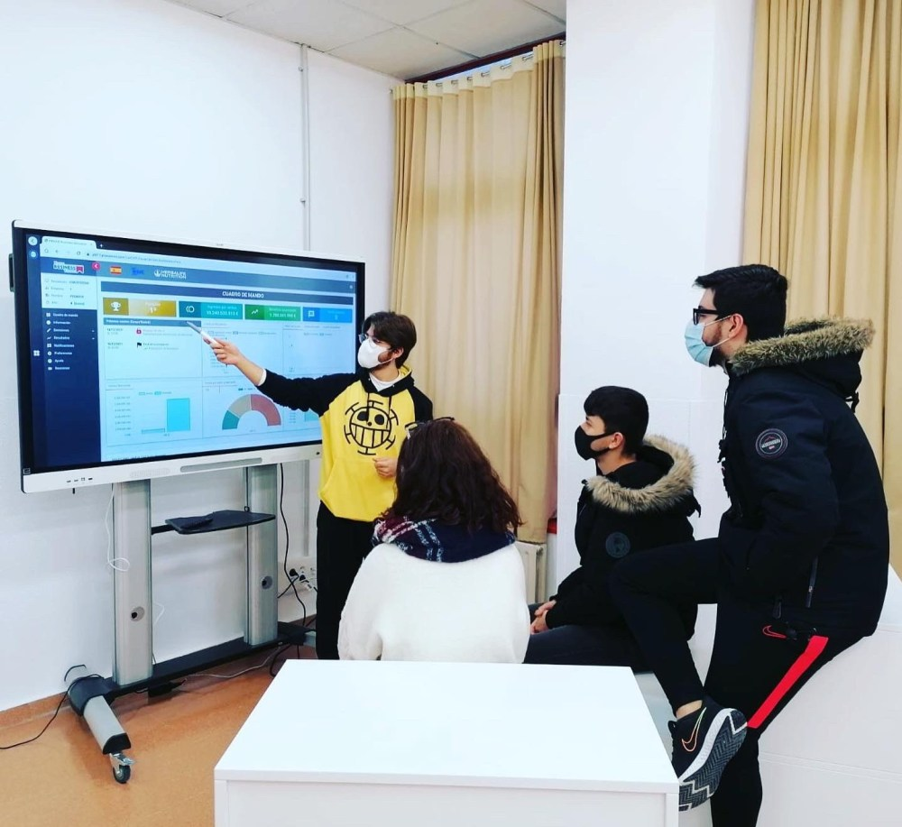
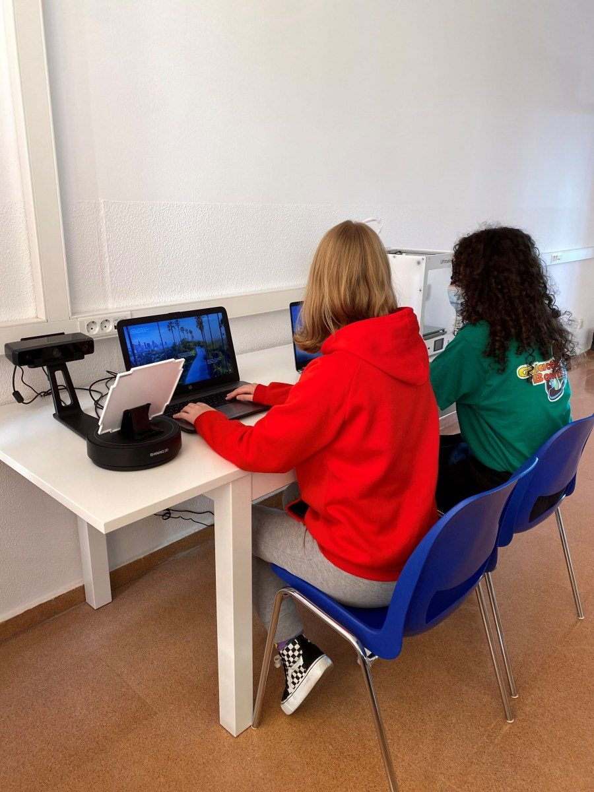
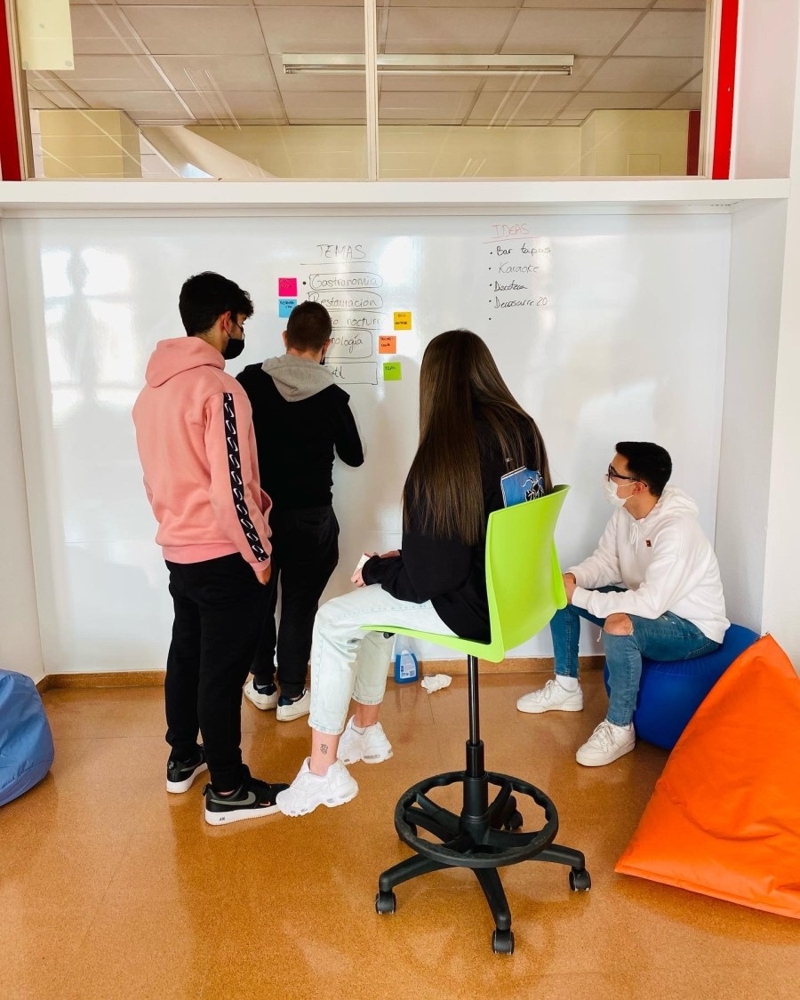
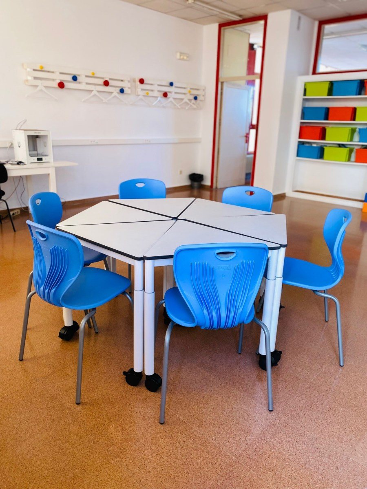
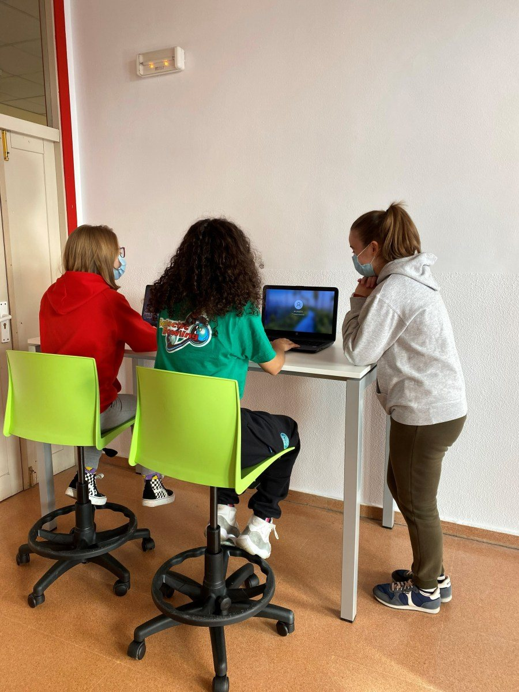

Este curso comenzó para nuestro centro con el reto de crear un nuevo espacio: el aula de emprendimiento. La idea de este espacio, según la orden de la Consejería de Educación de Castilla y León, era crear un espacio polivalente, propicio, digital y dinámico que favoreciera la innovación y la creatividad. Entre otros, los objetivos fijados para este espacio eran:
- Fomentar el emprendimiento y promover la adquisición de competencias emprendedoras en el alumnado, según EntreComp.
- Crear una red de colaboración entre centros, organizaciones empresariales, la comunidad…
- Ofrecer un espacio de incubadora de emprendimiento para antiguos alumnos, donde puedan trabajar en sus proyectos de empresa, recibir asesoramiento y facilitar la creación de microempresas.
Si es la primera vez que oyes hablar de EntreComp, es el marco europeo de competencia emprendedora. La idea de EntreComp es identificar oportunidades y actuar sobre ellas para crear valor para otras personas, ya sea ese valor social, cultural o económico. La idea de nuestra aula de emprendimiento, entonces, es educar a una ciudadanía muy activa, con iniciativa y espíritu crítico, consciente de su poder para ser motor de cambio, capaz de detectar oportunidades e ideas para mejorar su vida y la de los demás y ponerlas en práctica —siendo siempre consciente del impacto de sus acciones sobre las demás personas, la sociedad y el medio ambiente—. Personas que, en un entorno incierto y cambiante, sean capaces de adaptarse y aprender constantemente.
Se me encargó liderar la creación de esta aula de emprendimiento. El primer paso fue decidir, junto al equipo directivo, cuál de las aulas del centro se dedicaría a este proyecto. Una vez elegida y preparada, la dotamos del mobiliario y el equipamiento necesarios. El presupuesto total que teníamos era de 5.000 €, pero ¿a quién no le gusta un reto?
El aula de emprendimiento tenía que ser un lugar móvil, que invitara a la creatividad, la innovación y la acción. Decidí dividirla en espacios. No está terminada, ya que es un plan a tres años, así que esperamos completarla en los próximos cursos:
Zona speaker
Un espacio para debatir, presentar… con gradas móviles y una gran pantalla digital.

Zona maker
Espacio para crear, con escáner 3D, portátiles, impresora 3D, gafas de realidad virtual, croma…

Zona imagine
Un área lúdica donde dar rienda suelta a la imaginación, con una gran pizarra analógica para dar forma a cualquier proyecto.

Zona de trabajo en equipo
Un área con mesas móviles que permite múltiples opciones para trabajar en equipos de 2, 3, 4, 5 o 6 personas, o crear una mesa de reuniones alargada.

Espacio de coworking
Área equipada con portátiles y mesas y taburetes altos, pensada para recibir a antiguos alumnos y ofrecerles un lugar donde trabajar en sus planes de empresa y recibir también asesoramiento del profesorado.

Una vez equipada el aula para empezar a trabajar, organicé un curso de formación/motivación e invité a todo el profesorado del centro para darles a conocer esta nueva aula de emprendimiento y EntreComp. En principio es un proyecto pensado para la Formación Profesional, pero había visto ejemplos en otros países de «centros emprendedores», y me parecía una pena desaprovechar este espacio y esta idea solo con parte de nuestro alumnado. Mi objetivo era que el mayor número posible de docentes supiera en qué consistía el aula de emprendimiento, qué es EntreComp y cuál era la finalidad de este nuevo espacio, y proponer algunos ejemplos de actividades que pudieran realizarse en cualquier materia para desarrollar las competencias emprendedoras del alumnado.
Para mí era importante implicar a otros docentes en el proyecto, porque no podía hacerlo sola. No tenía horas asignadas en mi horario para este proyecto, así que el emprendimiento había que trabajarlo a la vez que impartíamos el currículo ordinario, y necesitaba a más gente a bordo. También tenía claro que lo importante aquí no era el espacio en sí, sino las metodologías a aplicar, que permitirían a nuestro alumnado formarse y desarrollar esas competencias emprendedoras: aprendizaje basado en proyectos, aprendizaje basado en retos, aprendizaje-servicio, simulación… Me encantaría compartir contigo algunos de los proyectos en los que hemos trabajado este curso, pero lo haré en otra entrada del blog. Creo que esta aula de emprendimiento puede haber encendido una pequeña chispa que nos lleve a ser un centro emprendedor en el futuro.